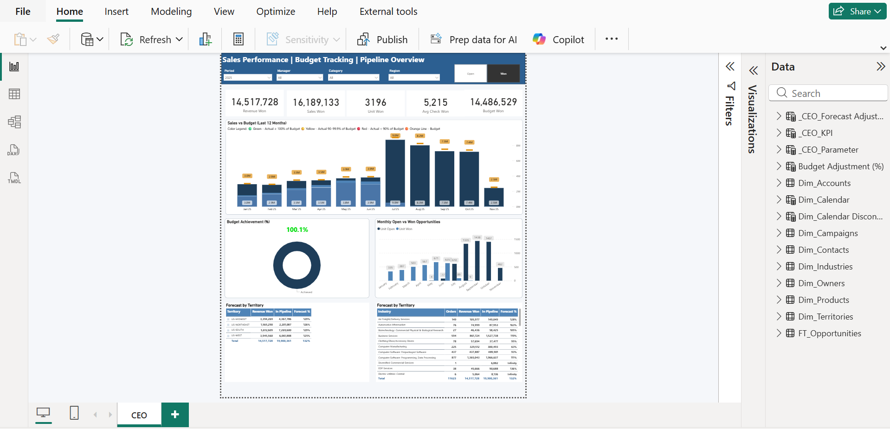
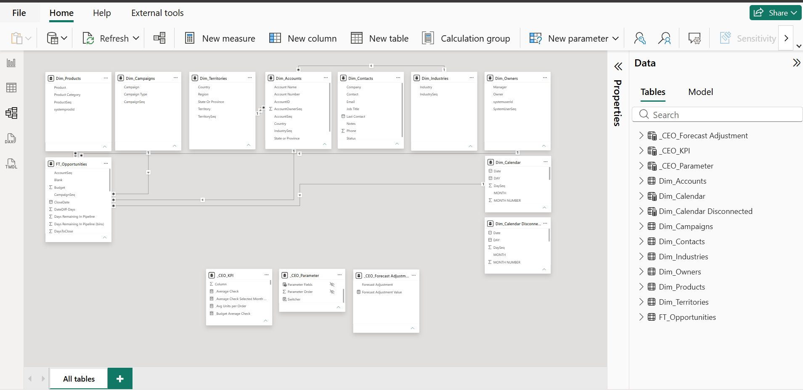

An executive Power BI dashboard for the CEO to track Budget vs Actual performance, monthly sales dynamics, open vs won opportunity pipeline, and territory/industry forecasts — with a built-in What-if scenario parameter for budget adjustments.

Executive management needed a single report to monitor sales performance against budget, track the health of the open/won opportunity pipeline, and review forecasts by territory and industry — without manually consolidating data from multiple Excel files.
I built a single-page Power BI report with executive KPI cards, a 12-month "Actual vs Budget" chart with color-coded performance indicators, an Open vs Won opportunities trend, and forecast tables broken down by territory and industry. The report is fully driven by Period, Manager, Category and Region filters, plus an Open/Won toggle.

A classic star schema: the fact table FT_Opportunities is connected to dimension tables Dim_Accounts, Dim_Contacts, Dim_Products, Dim_Campaigns, Dim_Territories, Dim_Industries, Dim_Owners and Dim_Calendar. A separate Dim_Calendar Disconnected table enables an independent analysis-period selector, along with supporting tables _CEO_KPI (dynamic KPI selector), _CEO_Parameter and _CEO_Forecast_Adjustment (the What-if parameter used for scenario-based forecast/budget adjustments).
Leadership sees budget performance and pipeline health on one screen instead of manually consolidating multiple files.
Color-coded actual vs budget by month instantly highlights underperforming periods and territories.
The What-if parameter lets the forecast be instantly recalculated as budget assumptions change.